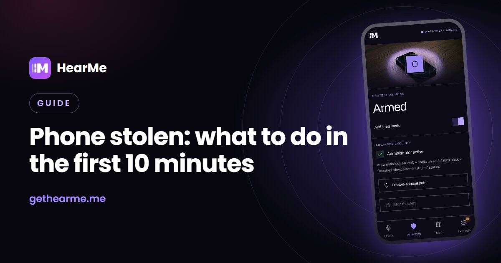
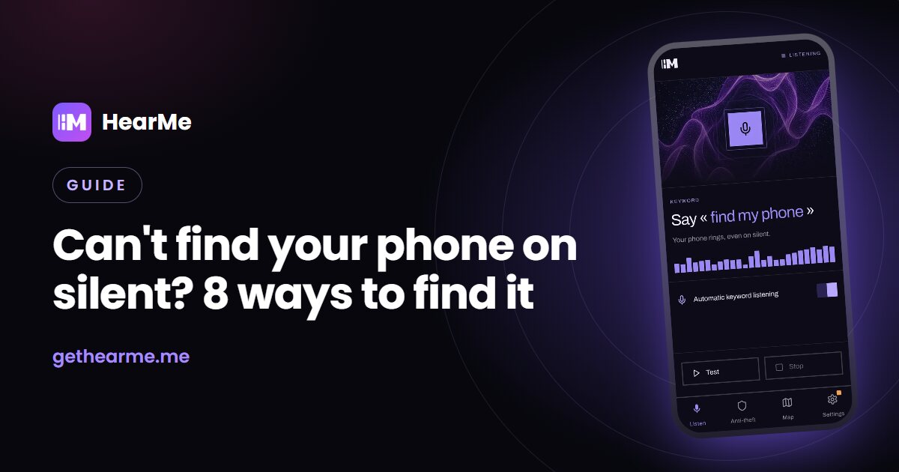
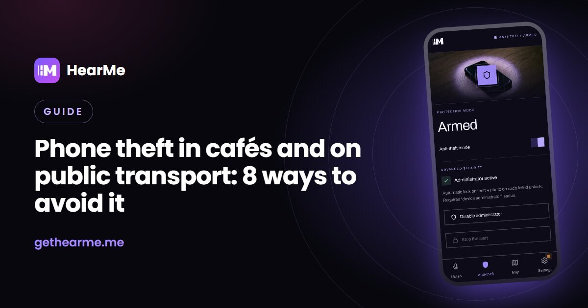
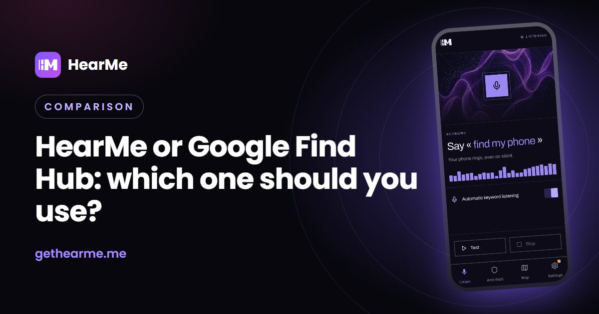
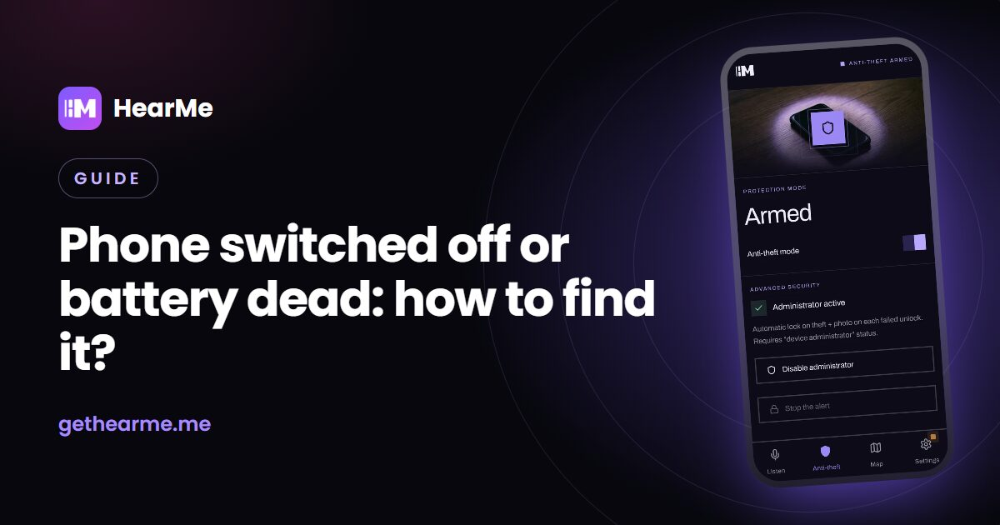

Guides
Guides: find and protect your phone
Simple, checked advice to find your phone, react fast if it's stolen and avoid having it taken. Free, with or without HearMe.

Phone stolen: what to do in the first 10 minutes
Your phone was stolen? The right steps in order: locate it, block the SIM card, protect your accounts, report it with the IMEI number. A simple, free guide.
Read the guide →
Can't find your phone on silent? 8 ways to find it
Your phone is on silent and you can't find it? Make it ring with Google, a watch or an assistant, or follow our tips. A simple, free guide.
Read the guide →
Phone theft in cafés and on public transport: 8 ways to avoid it
In cafés, on terraces, on the metro or the bus: simple habits to avoid phone theft, and what to have ready if it's taken anyway. A free guide.
Read the guide →
HearMe or Google Find Hub: which one should you use?
Google Find Hub (formerly Find My Device) or HearMe: what each one does, what's missing, and why the best choice is to use both. An honest comparison.
Read the guide →
Phone switched off or battery dead: how to find it?
Your phone is off, out of battery, or stolen and switched off? What you can still do: last location, Find Hub network, blocking, police report. A simple, free guide.
Read the guide →